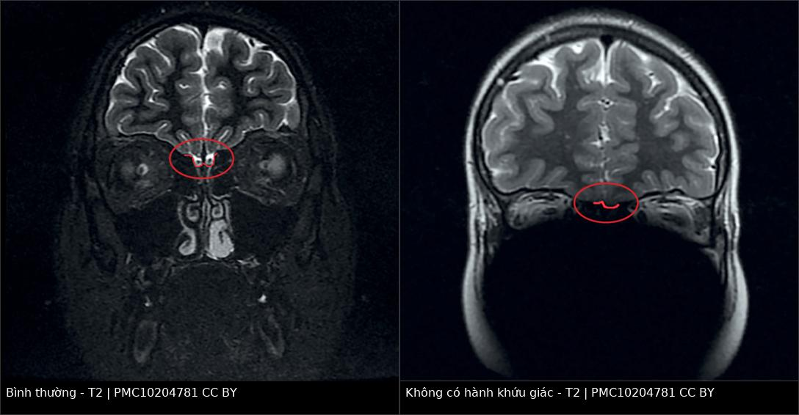
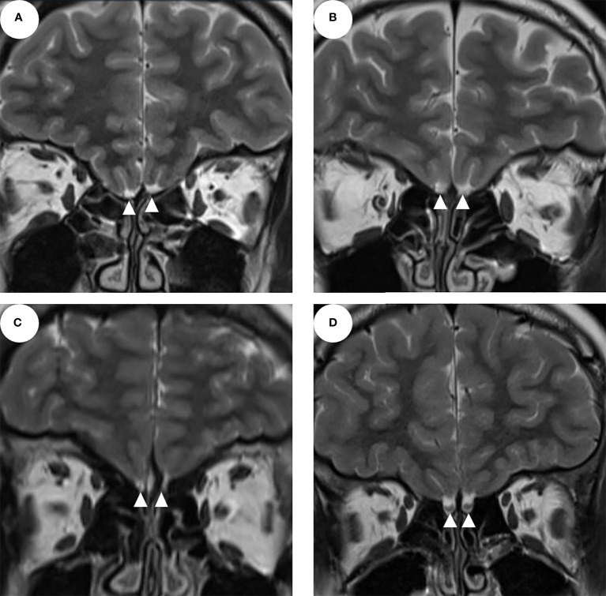

1741 — Hội chứng Kallmann: thiểu sản/không có hành khứu giác trên MRI / Kallmann syndrome: olfactory bulb aplasia–hypoplasia on MRI
Tags: pattern:thieu-san-hanh-khuu-giac pattern:khong-co-hanh-khuu-giac pattern:day-thi-muon pattern:vo-kinh pattern:khong-khoi-ho-yen vung:ho-yen vung:nao vung:nen-so protocol:MRI-hanh-khuu-giac protocol:do-the-tich-hanh-khuu-giac protocol:MRI-tuyen-yen score:SROS protocol:test-khuu-giac
Mức chắc chắn (certainty): tổng hợp y văn (literature synthesis) — ghép 1 nghiên cứu 71 bệnh nhân CHH có định lượng hành khứu giác (Frontiers in Endocrinology 2022, PMC9523726, CC BY) và 1 nghiên cứu so sánh 19 bệnh nhân CHH với 15 người chứng (Problems of Endocrinology 2023, PMC10204781, CC BY 4.0). Phần di truyền và biểu hiện ngoài sinh dục đối chiếu GeneReviews (link trong sources.md), không dùng ảnh. Không có thử nghiệm ngẫu nhiên về ngưỡng kích thước hành khứu giác.
Câu chốt: ở trẻ dậy thì muộn + FSH/LH thấp, mất khứu giác không phải "triệu chứng phụ" mà là cửa vào chẩn đoán: GnRH và hành khứu giác cùng xuất phát từ lá khứu giác, nên không có hành khứu giác hai bên trên MRI coronal T2 lát 2–3 mm là dấu hiệu mô học–phôi thai của Kallmann, không chỉ là "thiểu sản giải phẫu". Ba điều quyết định: (1) 96% Kallmann có bất thường hành khứu giác hai bên, nhưng 33% CHH không mất khứu giác cũng có — nên không chẩn đoán chỉ bằng ảnh; (2) 9 bệnh nhân không có hành khứu giác vẫn ngửi bình thường — ảnh không thay thế test khứu giác; (3) MRI còn phải trả lời "có khối hố yên hay không", vì u tuyến yên và vô kinh do chức năng là hai hàng phân biệt chính.
1. Tổng quan bệnh học – cơ chế hình ảnh
1.1 Phôi thai học: một đường di trú, hai bệnh cảnh
- Tế bào GnRH không sinh ra tại hạ đồi: chúng di trú từ lá khứu giác (olfactory placode) dọc theo sợi trục khứu giác qua tấm sàng vào hành khứu giác rồi tới hạ đồi. Hành khứu giác là giá đỡ giải phẫu của cuộc di trú này.
- Đột biến gen di trú (ANOS1/KAL1 liên kết X, FGFR1, FGF8, PROKR2, PROK2, CHD7, SOX10…) → GnRH không tới hạ đồi + hành khứu giác không hình thành → suy sinh dục trung ương + mất/giảm khứu giác = hội chứng Kallmann (KS).
- Dịch tễ: CHH (suy sinh dục trung ương bẩm sinh) gặp 1:4.000–10.000; KS chiếm 50–60% CHH (PMC9523726). Vì vậy mỗi ca dậy thì muộn cần hỏi khứu giác trước khi chụp, không chụp "toàn bộ" rồi mới nghĩ.
- Biểu hiện ngoài sinh dục (gợi ý Kallmann hơn CHH không mất khứu giác): đồng vận bàn tay (synkinesia), sứt môi/chẻ vòm, điếc tiếp nhận, bất sản thận một bên, dính ngón/ngắn ngón. Trong loạt 71 bệnh nhân, các bất thường này gặp nhiều hơn ở KS nhưng khác biệt không có ý nghĩa thống kê — tức không thể dựa vào dị tật ngoài sinh dục để loại trừ.
1.2 TẠI SAO hình ảnh trông như vậy — vật lý + mô bệnh
| Cấu trúc / dấu hiệu | Vì sao có tín hiệu đó | Hệ quả thực hành |
|---|---|---|
| Hành khứu giác bình thường | Mô thần kinh giàu nước, ít mỡ → T2 trung bình–hơi tăng, T1 trung bình, kích thước vài mm; nằm trong rãnh khứu giác trên mặt ổ mắt thùy trán | Phải thấy cấu trúc hình bầu dục ngay trên tấm sàng, tách khỏi dịch não tủy |
| Không có hành khứu giác (aplasia) | Không có mô thần kinh → chỉ còn rãnh khứu giác chứa dịch não tủy (T2 sáng đồng nhất, T1 tối) | "Rãnh rỗng" = không có hành; đừng gọi là "hành teo" khi không thấy mô ở mọi lát |
| Thiểu sản (hypoplasia) | Hành còn nhưng thể tích giảm: giảm số nơ-ron và sợi trục → thể tích giảm | Cần đo, không ước lượng mắt: chiều cao, chiều rộng, thể tích |
| Phù/ngấm thuốc bất thường | Hành khứu giác không có hàng rào máu–não kiểu mạch máu, nhưng không ngấm thuốc bệnh lý ở Kallmann | Ngấm thuốc/nốt không phải Kallmann → nghĩ u, viêm, di căn |
| Mất tín hiệu do lát cắt dày | Hành chỉ 2–3 mm: lát 5 mm có thể bỏ sót hoàn toàn do hiệu ứng thể tích | Bắt buộc lát 2–3 mm, coronal, vuông góc tấm sàng |
- Ngưỡng định lượng đo được (không phải "nhỏ/thấy mờ"):
| Đại lượng | Kallmann / CHH | Người chứng | Nguồn |
|---|---|---|---|
| Chiều cao hành khứu giác phải | 1,0 mm [0,2; 1,8] | 3,0 mm [2,5; 3,2] | PMC10204781 |
| Chiều rộng hành khứu giác phải | 1,0 mm [0,2; 1,9] | 2,5 mm [2,0; 3,0] | PMC10204781 |
| Chiều cao hành khứu giác trái | 0,8 mm [0,0; 1,2] | 3,0 mm [2,7; 3,2] | PMC10204781 |
| Chiều rộng hành khứu giác trái | 0,8 mm [0,0; 1,2] | 2,5 mm [2,0; 3,0] | PMC10204781 |
| Thể tích hành khứu giác trung bình | 2,40 ± 10,72 mm³ (KS) | 37,58 ± 20,64 mm³ (CHH không mất khứu giác) | PMC9523726 |
| Độ sâu rãnh khứu giác trung bình | 2,64 ± 3,07 mm (KS) | 6,82 ± 2,31 mm (CHH không mất khứu giác) | PMC9523726 |
| Tỉ lệ bất thường hành khứu giác | 96% (27/28) hai bên ở KS | 33% (9/27) ở CHH không mất khứu giác | PMC9523726 |
| Tỉ lệ bất thường trên toàn nhóm CHH | 94,7% (18/19) thiểu sản/không có một hoặc hai bên | — | PMC10204781 |
- Vì sao thể tích lại quan trọng hơn "có/không": hành khứu giác là cấu trúc nhỏ, dài, nên một chiều dễ bị đọc sai do mặt cắt; thể tích (planimetry nhiều lát × độ dày + khoảng hở) phản ánh khối lượng mô thần kinh và tương quan với điểm khứu giác (trong loạt 71 ca, OBV và OSD là yếu tố độc lập dự báo chức năng khứu giác).
2. Mẫu hình + chẩn đoán phân biệt theo mẫu hình (gamut)
Đọc theo cái nhìn đầu tiên trên coronal T2 qua tấm sàng:
- A. Không thấy hành khứu giác hai bên + rãnh khứu giác nông + dậy thì muộn: Kallmann (KS) — chẩn đoán gần như chắc khi kèm mất khứu giác.
- B. Hành khứu giác hai bên teo, còn mô + rãnh nông: Kallmann thể thiểu sản hoặc CHH không mất khứu giác — không phân biệt được bằng ảnh, phải làm test khứu giác.
- C. Hành khứu giác một bên không có, bên kia bình thường: bất sản một bên — thường khứu giác bình thường (6 ca trong loạt 71), không đủ chẩn đoán Kallmann.
- D. Hành khứu giác bình thường nhưng mất khứu giác: mất khứu giác mắc phải (sau chấn thương, sau viêm mũi xoang mạn, sau nhiễm virus), hoặc Kallmann hiếm (4% KS có ảnh bình thường).
- E. Không có hành khứu giác nhưng khứu giác bình thường: bất sản bẩm sinh đơn độc — có thật (3 ca hai bên trong loạt 71), không được chẩn đoán Kallmann chỉ vì ảnh.
- F. Bất thường đường giữa kèm theo: loạn sản vách trong suốt – thị thần kinh (septo-optic dysplasia), thoát vị não nền sọ, CHARGE (CHD7) — phải đọc toàn bộ não, không dừng ở hành khứu giác.
- G. Có khối hố yên/tuyến yên: u tuyến yên, viêm tuyến yên, craniopharyngioma — đây là hàng phân biệt của dậy thì muộn, không phải của mất khứu giác.
Nguyên tắc gamut: hành khứu giác trả lời "có phải Kallmann không", còn hố yên trả lời "có khối chèn ép không". Một ca dậy thì muộn cần cả hai mặt phẳng đọc.
3. Bảng so sánh phân biệt (ma trận đối chiếu)
| Thực thể (entity) | Hình ảnh điển hình (MRI coronal T2 2–3 mm) | Chốt vào (rule-in) | Chốt loại (rule-out) | Gợi ý xác nhận |
|---|---|---|---|---|
| Kallmann (KS) | Không có/teo hành khứu giác HAI bên, rãnh khứu giác nông (OSD 2,64 mm), thể tích hành 2,40 mm³; tuyến yên thường bình thường | Mất khứu giác + không có hành hai bên + FSH/LH thấp | Hành khứu giác bình thường hai bên → không phải KS (trừ 4% ngoại lệ) | Test khứu giác; gen ANOS1/FGFR1/PROKR2; MRI hố yên |
| CHH không mất khứu giác (nCHH) | 33% có bất thường hành (thường một bên, 22%); OSD 6,82 mm, thể tích 37,58 mm³ | FSH/LH thấp + khứu giác bình thường + không có bất thường hành hai bên | Mất khứu giác rõ → nghiêng KS | Test khứu giác; theo dõi dậy thì |
| Bất sản hành khứu giác đơn độc | Không có hành hai bên, rãnh khứu giác bình thường, không có bất thường não khác | Không có hành hai bên + khứu giác BÌNH THƯỜNG + trục sinh dục bình thường | FSH/LH thấp + mất khứu giác → không còn "đơn độc" | Test khứu giác; nội tiết lặp lại |
| Mất khứu giác mắc phải | Hành teo nhưng còn, rãnh khứu giác sâu bình thường, có mảng xơ/não mềm sau chấn thương hoặc dày niêm mạc xoang | Tiền sử chấn thương/viêm mũi + teo hành mắc phải | Không có hành bẩm sinh + rãnh nông → nghi bẩm sinh | Hỏi tiền sử; nội soi mũi; test khứu giác |
| Septooptic dysplasia | Thiểu sản thị thần kinh + vắng vách trong suốt + bất thường tuyến yên, kèm bất sản hành khứu giác | Tam chứng đường giữa | Thị thần kinh và vách trong suốt bình thường | MRI toàn não; khám thị lực |
| U tuyến yên / viêm tuyến yên | Khối hố yên; viêm: ngấm đồng nhất, cuống dày, mất chấm sáng T1 | Khối hố yên + prolactin cao hoặc suy tuyến yên | Hố yên trống, không khối | Prolactin, nội tiết; MRI động học |
| Vô kinh do chức năng (FHA) | Hành khứu giác bình thường, tuyến yên bình thường/teo nhẹ | FSH/LH thấp + khứu giác bình thường + bối cảnh giảm cân/stress | Mất khứu giác hoặc không có hành → không phải FHA | Chẩn đoán loại trừ; cân nặng, tâm lý |

Ảnh ghép — coronal T2, cùng độ phân giải; khác biệt nằm ở có hay không mô hành khứu giác ngay trên tấm sàng. Nguồn: Problems of Endocrinology 2023, PMC10204781, CC BY 4.0; ghép bằng tools/make_composite.py (letterbox nền đen, không crop/kéo giãn).
4. Protocol chụp + hệ phân độ/điểm chuẩn hóa
4.1 Khi nào chụp — và chụp gì
flowchart TD
A[Dậy thì muộn hoặc vô kinh + FSH/LH thấp] --> B[Test khứu giác: tự khai + test định lượng]
B --> C[MRI sọ: coronal T2 lát 2-3 mm qua tấm sàng + sagittal T1 tuyến yên]
C --> D{Hành khứu giác hai bên?}
D -->|Không có hoặc teo| E[Kallmann nếu mất khứu giác]
D -->|Bình thường| F[Tìm nguyên nhân khác: u tuyến yên, FHA, chậm dậy thì]
E --> G[Nội tiết + di truyền + tư vấn]
F --> G
- Chỉ định: dậy thì muộn/vô kinh nguyên phát + FSH/LH thấp hoặc bình thường thấp, đặc biệt khi tự khai mất/giảm khứu giác, có dị tật ngoài sinh dục, hoặc không có tiến triển dậy thì sau 14 tuổi (nữ) / 14–15 tuổi (nam).
- Trình tự hình ảnh tối thiểu:
- Coronal T2, lát 2–3 mm, FOV nhỏ (16–18 cm), mặt cắt vuông góc với tấm sàng — không dùng lát 5 mm.
- Sagittal T1 tuyến yên (không tiêm) — tìm khối, chấm sáng thùy sau, cuống.
- Coronal T1 sau tiêm chỉ khi nghi khối/viêm tuyến yên.
- Đo và ghi 4 số: (1) chiều cao hành (mm); (2) chiều rộng hành (mm); (3) thể tích hành (mm³, nếu có phần mềm); (4) độ sâu rãnh khứu giác (mm, đo ở lát coronal qua bó khứu giác, tính từ mặt ổ mắt tới đáy rãnh).
- Đọc thêm: vách trong suốt, thị thần kinh, tuyến yên, có thoát vị não nền sọ hay dày niêm mạc xoang (mất khứu giác mắc phải).
4.2 Hai thang đo chức năng hay dùng trong bài gốc
| Công cụ | Cấu trúc | Ngưỡng/diễn giải | Vai trò |
|---|---|---|---|
| SROS (Self-reported Olfactory Scale) | 5 mức tự khai | Độ chính xác 91,5%, sens 0,857, spec 0,972 so với test khứu giác khách quan | Nhanh, rẻ; bỏ sót người không than phiền |
| MRI-OA (MRI of olfactory apparatus) | Bất thường cấu trúc + OBV + OSD | Độ chính xác 92,7%, sens 0,964, spec 0,889, AUC 0,927 | Khách quan; sens cao hơn SROS nhưng spec thấp hơn |
- Diễn giải thực hành: MRI-OA rất nhạy (bỏ sót ít Kallmann) nhưng không đặc hiệu tuyệt đối — vì 33% nCHH cũng có bất thường hành. Vì vậy ảnh dương tính không đủ chẩn đoán, cần test khứu giác; còn ảnh âm tính gần như loại Kallmann (chỉ 4% ngoại lệ).
- Không có "score" chính thức cho Kallmann: đây là chẩn đoán phối hợp hình ảnh + khứu giác + nội tiết + di truyền; đừng gán BI-RADS/Lung-RADS kiểu phân độ cho bài này.
5. Biến thể bình thường và cạm bẫy
- Biến thể 1 — hành khứu giác "không thấy" do lát cắt dày: hành chỉ 2–3 mm; lát 5 mm có thể nằm ngoài mặt cắt hoặc bị hòa với dịch não tủy. Luôn đặt lại lát mỏng trước khi kết luận "không có hành".
- Biến thể 2 — bất sản một bên: gặp ở 22% nCHH trong loạt 71 ca; 6 ca bất sản một bên ngửi bình thường. Không chẩn đoán Kallmann, không điều trị hormon chỉ vì ảnh.
- Biến thể 3 — bất sản hai bên mà khứu giác bình thường: 3 ca trong loạt 71; hiếm nhưng có thật, thường ở nam CHH. Đây là lý do test khứu giác bắt buộc, không thể thay bằng ảnh.
- Cạm bẫy 1 — "thấy rãnh là thấy hành": rãnh khứu giác luôn tồn tại dù không có hành; cái cần thấy là mô hành (tín hiệu trung gian) tách khỏi dịch não tủy T2 sáng. Ảnh composite ở mục 3 cho thấy rõ: bên phải vẫn có rãnh, nhưng rỗng.
- Cạm bẫy 2 — bỏ qua hố yên: Kallmann có thể kèm u tuyến yên/dị tật đường giữa; ngược lại, u tuyến yên gây dậy thì muộn + tăng prolactin và hành khứu giác bình thường. Đọc cả hai vùng trên cùng một lần chụp.
- Cạm bẫy 3 — mất khứu giác mắc phải bị gọi là Kallmann: sau chấn thương đầu, viêm mũi xoang mạn, nhiễm virus, hành khứu giác teo dần nhưng vẫn còn mô và rãnh khứu giác sâu bình thường; hỏi tiền sử và soi mũi trước khi quy kết bẩm sinh.
- Cạm bẫy 4 — thoả mãn tìm kiếm: thấy bất sản hành khứu giác rồi dừng, bỏ thiểu sản thị thần kinh, vắng vách trong suốt, thoát vị não nền sọ — những thứ đổi hoàn toàn tư vấn di truyền và tiên lượng.
6. Tự lượng giá — Blind Quiz
Ca 1 — Nam 16 tuổi, chưa dậy thì, không phân biệt được mùi cà phê từ nhỏ. Nhìn 4 ảnh A–D, mô tả trước khi mở đáp án.

- Câu hỏi: (1) A–C khác D ở cấu trúc nào? (2) Ba chẩn đoán phân biệt? (3) Dấu hiệu nào chốt Kallmann?
Bấm để hiện đáp án (findings + chẩn đoán)
- Findings: A–C — không thấy mô hành khứu giác trên tấm sàng; chỉ có rãnh khứu giác nông chứa dịch não tủy (tam giác trắng). D — hành khứu giác bình thường hai bên (tam giác trắng bao quanh cấu trúc hình bầu dục).
- Chẩn đoán: hội chứng Kallmann — bất sản hành khứu giác hai bên + dậy thì muộn + mất khứu giác.
- Phân biệt: CHH không mất khứu giác (hành bình thường hoặc chỉ một bên), bất sản hành khứu giác đơn độc (khứu giác bình thường), mất khứu giác mắc phải (hành còn nhưng teo, rãnh sâu bình thường).
- Vì sao: GnRH và hành khứu giác cùng di trú từ lá khứu giác; mất hành hai bên phản ánh thất bại di trú, không phải "biến thể nhỏ".
- Nguồn ảnh: Frontiers in Endocrinology 2022, PMC9523726, CC BY.
Ca 2 — Nữ 19 tuổi, vô kinh nguyên phát, FSH/LH thấp, khứu giác bình thường trên test. So sánh hai ảnh.
- Câu hỏi: ảnh phải có chẩn đoán Kallmann không? Cần thêm dữ kiện gì?
Bấm để hiện đáp án (findings + chẩn đoán)
- Findings: trái — mô hành khứu giác hai bên trong rãnh khứu giác; phải — không có mô hành, rãnh khứu giác rỗng, nông.
- Chẩn đoán: không đủ chẩn đoán Kallmann. Bất sản hành khứu giác hai bên có thể gặp ở người khứu giác bình thường (3 ca trong loạt 71) và ở CHH không mất khứu giác (33% có bất thường hành). Cần test khứu giác định lượng + nội tiết + di truyền.
- Vì sao: MRI-OA nhạy 0,964 nhưng đặc hiệu 0,889 — chính vì nhóm "ảnh dương, chức năng bình thường" này.
- Cạm bẫy: gọi "Kallmann" chỉ vì ảnh → điều trị hormon và tư vấn di truyền sai cho người không mất khứu giác.
- Nguồn ảnh: Problems of Endocrinology 2023, PMC10204781, CC BY 4.0; ảnh ghép
tools/make_composite.py.
Ca 3 — Nam 15 tuổi, dậy thì muộn, ngửi bình thường, MRI coronal T2: không thấy hành khứu giác hai bên, rãnh khứu giác sâu 7 mm, tuyến yên bình thường.
- Câu hỏi: (1) Bạn đo gì để phân biệt thiểu sản với bất sản? (2) Có cần chụp lại lát mỏng không? (3) Kết luận nào không được phép đưa ra?
Bấm để hiện đáp án (findings + chẩn đoán)
- Findings: rãnh khứu giác 7 mm (gần mức bình thường 6,82 mm) nhưng không có mô hành — cần đo chiều cao, chiều rộng, thể tích ở lát 2–3 mm trước khi kết luận.
- Chẩn đoán: bất sản hành khứu giác hai bên trên hình ảnh; không chẩn đoán Kallmann vì khứu giác bình thường và rãnh khứu giác không nông.
- Không được kết luận: "Kallmann chắc chắn" hoặc "không cần test khứu giác". Ngược lại, cũng không được nói "không có bệnh" khi FSH/LH thấp — cần đánh giá nội tiết đầy đủ (nguyên nhân trung ương khác: u, viêm, hội chứng đường giữa).
- Vì sao: bất sản hành khứu giác không đồng nghĩa mất khứu giác; mối liên hệ là thống kê, không phải quy tắc tuyệt đối.
- Nguồn số liệu: PMC9523726 (OSD 6,82 mm ở nCHH) và PMC10204781 (kích thước hành).
Bài liên quan chéo
- 1675 – Vô kinh trung ương trên MRI tuyến yên
- 245 – U tuyến yên chảy máu/nhồi máu (pituitary apoplexy)
- 1696 – Bệnh Cushing do u tuyến yên: MRI 3T động học & BIPSS
Ảnh
- 3 ảnh gốc CC BY 4.0 / CC BY (PMC9523726, PMC10204781) + 1 ảnh ghép tạo bằng
tools/make_composite.py. Chi tiết từng ảnh:images/CREDITS.md. - Không dùng ảnh nguồn không rõ giấy phép; không crop, không kéo giãn.
Không dùng để chẩn đoán độc lập khi chưa có người hướng dẫn.